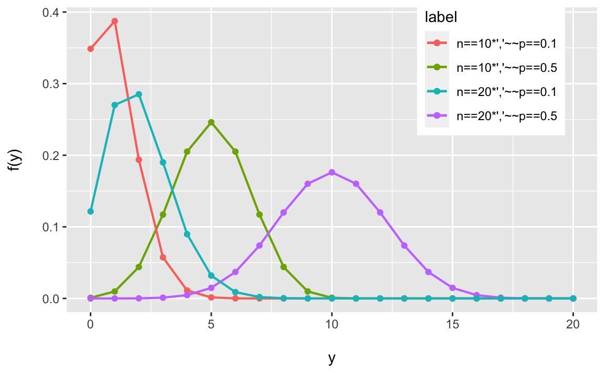
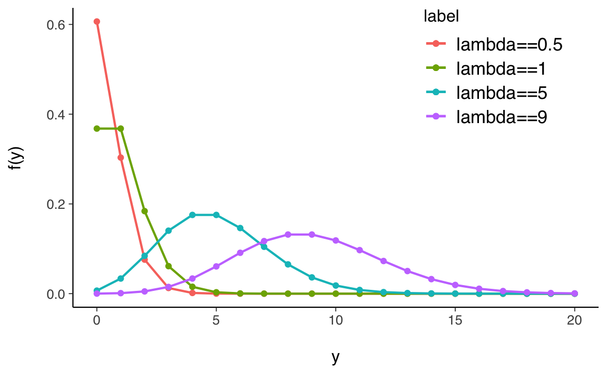

13 Distribuzioni di v.c. discrete
In questo Capitolo verranno esaminate le principali distribuzioni di probabilità delle variabili casuali discrete. Un esperimento casuale che può dare luogo a solo due possibili esiti (successo, insuccesso) è modellabile con una variabile casuale di Bernoulli. Una sequenza di prove di Bernoulli costituisce un processo Bernoulliano. Il numero di successi dopo \(n\) prove di Bernoulli corrisponde ad una variabile casuale che segue la legge binomiale. La distribuzione binomiale risulta da un insieme di prove di Bernoulli solo se il numero totale \(n\) è fisso per disegno. Se il numero di prove è esso stesso una variabile casuale, allora il numero di successi nella corrispondente sequenza di prove bernoulliane segue al distribuzione di Poisson. Concluderemo con la distribuzione discreta uniforme.
13.1 Una prova Bernoulliana
Se un esperimento casuale ha solo due esiti possibili, allora le repliche indipendenti di questo esperimento sono chiamate “prove Bernoulliane” (il lancio di una moneta è il tipico esempio).
Definizione 13.1 Viene detta variabile di Bernoulli una variabile casuale discreta \(Y = \{0, 1\}\) con la seguente distribuzione di probabilità:
\[ P(Y \mid \theta) = \begin{cases} \theta & \text{se $Y = 1$}, \\ 1 - \theta & \text{se $Y = 0$}, \end{cases} \]
con \(0 \leq \theta \leq 1\). Convenzionalmente l’evento \(\{Y = 1\}\) con probabilità \(\theta\) viene chiamato “successo” mentre l’evento \(\{Y = 0\}\) con probabilità \(1-\theta\) viene chiamato “insuccesso”.
Applicando l’operatore di valore atteso e di varianza, otteniamo
\[ \begin{align} \mathbb{E}(Y) &= 0 \cdot P(Y=0) + 1 \cdot P(Y=1) = \theta, \\ \mathbb{V}(Y) &= (0 - \theta)^2 \cdot P(Y=0) + (1 - \theta)^2 \cdot P(Y=1) = \theta(1-\theta). \end{align} \tag{13.1}\]
Scriviamo \(Y \sim \mbox{Bernoulli}(\theta)\) per indicare che la variabile casuale \(Y\) ha una distribuzione Bernoulliana di parametro \(\theta\).
Esercizio 13.1 Nel caso del lancio di una moneta equilibrata la variabile casuale di Bernoulli assume i valori \(0\) e \(1\). La distribuzione di massa di probabilità è pari a \(\frac{1}{2}\) in corrispondenza di entrambi i valori. La funzione di distribuzione vale \(\frac{1}{2}\) per \(Y = 0\) e \(1\) per \(Y = 1\).
13.2 Una sequenza di prove Bernoulliane
La distribuzione binomiale è rappresentata dall’elenco di tutti i possibili numeri di successi \(Y = \{0, 1, 2, \dots n\}\) che possono essere osservati in \(n\) prove Bernoulliane indipendenti di probabilità \(\theta\), a ciascuno dei quali è associata la relativa probabilità. Esempi di una distribuzione binomiale sono i risultati di una serie di lanci di una stessa moneta o di una serie di estrazioni da un’urna (con reintroduzione). La distribuzione binomiale di parametri \(n\) e \(\theta\) è in realtà una famiglia di distribuzioni: al variare dei parametri \(\theta\) e \(n\) variano le probabilità.
Definizione 13.2 La probabilità di ottenere \(y\) successi e \(n-y\) insuccessi in \(n\) prove Bernoulliane è data dalla distribuzione binomiale:
\[ \begin{align} P(Y=y) &= \binom{n}{y} \theta^{y} (1-\theta)^{n-y} \notag \\ &= \frac{n!}{y!(n-y)!} \theta^{y} (1-\theta)^{n-y}, \end{align} \tag{13.2}\]
dove \(n\) = numero di prove Bernoulliane, \(\theta\) = probabilità di successo in ciascuna prova e \(y\) = numero di successi.
Dimostrazione. L’Equazione 13.2 può essere derivata nel modo seguente. Indichiamo con \(S\) il successo e con \(I\) l’insuccesso di ciascuna prova. Una sequenza di \(n\) prove Bernoulliane darà come esito una sequenza di \(n\) elementi \(S\) e \(I\). Ad esempio, una sequenza che contiene \(y\) successi è la seguente:
\[ \overbrace{SS\dots S}^\text{$y$ volte} \overbrace{II\dots I}^\text{$n-y$ volte} \]
Essendo \(\theta\) la probabilità di \(S\) e \(1-\theta\) la probabilità di \(I\), la probabilità di ottenere la specifica sequenza riportata sopra è
\[ \begin{equation} \overbrace{\theta \theta\dots \theta}^\text{$y$ volte} \overbrace{(1-\theta)(1-\theta)\dots (1-\theta)}^\text{$n-y$ volte} = \theta^y \cdot (1-\theta)^{n-y}. \end{equation} \tag{13.3}\]
Non siamo però interessati alla probabilità di una specifica sequenza di \(S\) e \(I\) ma, bensì, alla probabilità di osservare una qualsiasi sequenza di \(y\) successi in \(n\) prove. In altre parole, vogliamo la probabilità dell’unione di tutti gli eventi corrispondenti a \(y\) successi in \(n\) prove.
È immediato notare che una qualsiasi altra sequenza contenente esattamente \(y\) successi avrà sempre come probabilità \(\theta^y \cdot (1-\theta)^{n-y}\): il prodotto infatti resta costante anche se cambia l’ordine dei fattori.1 Per trovare il risultato cercato dobbiamo moltiplicare l’Equazione 13.3 per il numero di sequenze possibili di \(y\) successi in \(n\) prove.
Il numero di sequenze che contengono esattamente \(y\) successi in \(n\) prove. La risposta è fornita dal coefficiente binomiale:
\[ \begin{equation} \binom{n}{y} = \frac{n!}{y!(n-y)!}, \end{equation} \tag{13.4}\]
dove il simbolo \(n!\) si legge \(n\) fattoriale ed è uguale al prodotto di \(n\) numeri interi decrescenti a partire da \(n\). Per definizione \(0! = 1\).
Essendo la probabilità dell’unione di \(K\) elementi incompatibili uguale alla somma delle loro rispettive probabilità, e dato che le sequenze di \(y\) successi in \(n\) prove hanno tutte la stessa probabilità, per trovare la formula della distributione binomiale Equazione 13.2 è sufficiente moltiplicare l’Equazione 13.3 per l’Equazione 13.4.
La distribuzione di probabilità di alcune distribuzioni binomiali, per due valori di \(n\) e \(\theta\), è fornita nella Figura 13.1.
Esercizio 13.2 Usando l’Equazione 13.2, si trovi la probabilità di \(y = 2\) successi in \(n = 4\) prove Bernoulliane indipendenti con \(\theta = 0.2\)
Soluzione. Abbiamo
\[ \begin{aligned} P(Y=2) &= \frac{4!}{2!(4-2)!} 0.2^{2} (1-0.2)^{4-2} \notag \\ &= \frac{4 \cdot 3 \cdot 2 \cdot 1}{(2 \cdot 1)(2 \cdot 1)} 0.2^{2} 0.8^{2} = 0.1536. \notag \end{aligned} \]
Ripetendo i calcoli per i valori \(y = 0, \dots, 4\) troviamo la distribuzione binomiale di parametri \(n = 4\) e \(\theta = 0.2\):
| y | P(Y = y) |
|---|---|
| 0 | 0.4096 |
| 1 | 0.4096 |
| 2 | 0.1536 |
| 3 | 0.0256 |
| 4 | 0.0016 |
| sum | 1.0 |
Lo stesso risultato si ottiene usando la sequente istruzione R:
dbinom(0:4, 4, 0.2)
#> [1] 0.4096 0.4096 0.1536 0.0256 0.0016Esercizio 13.3 Lanciando \(5\) volte una moneta onesta, qual è la probabilità che esca testa almeno tre volte?
Soluzione. In R, la soluzione si trova con
Alternativamente, possiamo trovare la probabilità dell’evento complementare a quello definito dalla funzione di ripartizione calcolata mediante pbinom(), ovvero
1 - pbinom(2, 5, 0.5)
#> [1] 0.513.2.1 Valore atteso e deviazione standard
La media (numero atteso di successi in \(n\) prove) e la deviazione standard di una distribuzione binomiale si trovano nel modo seguente:
\[ \begin{align} \mu &= n\theta, \notag \\ \sigma &= \sqrt{n\theta(1-\theta)}. \end{align} \tag{13.5}\]
Dimostrazione. Essendo \(Y\) la somma di \(n\) prove Bernoulliane indipendenti \(Y_i\), è facile vedere che
\[\begin{align} \mathbb{E}(Y) &= \mathbb{E}\left( \sum_{i=1}^n Y_i \right) = \sum_{i=1}^n \mathbb{E}(Y_i) = n\theta, \\ \mathbb{V}(Y) &= \mathbb{V} \left( \sum_{i=1}^n Y_i \right) = \sum_{i=1}^n \mathbb{V}(Y_i) = n \theta (1-\theta). \end{align}\]Esercizio 13.4 Si trovino il valore atteso e la varianza del lancio di quattro monete con probabilità di successo pari a \(\theta = 0.2\).
Soluzione. Il valore atteso è \(\mu = n \theta = 4 \cdot 0.2 = 0.8.\) Ciò significa che, se l’esperimento casuale venisse ripetuto infinite volte, l’esito testa verrebbe osservato un numero medio di volte pari a 0.8. La varianza è \(n \theta (1-\theta) = 4 \cdot 0.2 \cdot (1 - 0.2) = 0.64\).
13.3 Distribuzione di Poisson
La distribuzione di Poisson è una distribuzione di probabilità discreta che esprime le probabilità per il numero di eventi che si verificano successivamente ed indipendentemente in un dato intervallo di tempo, sapendo che mediamente se ne verifica un numero \(\lambda\). La distribuzione di Poisson serve dunque per contare il numero di volte in cui un evento ha luogo in un determinato intervallo di tempo. La stessa distribuzione può essere estesa anche per contare gli eventi che hanno luogo in una determinata porzione di spazio.
La distribuzione di Poisson può essere intesa come limite della distribuzione binomiale, dove la probabilità di successo \(\theta\) è pari a \(\frac{\lambda}{n}\) con \(n\) che tende a \(\infty\):
\[\begin{equation} \lim_{y \rightarrow \infty} \binom{n}{y} \theta^y (1-\theta)^{n-y} = \frac{\lambda^y}{y!}e^{-\lambda}. \end{equation}\]Alcune distribuzioni di Poisson sono riportate nella figura Figura 13.2.

Esercizio 13.5 Supponiamo che un evento accada 300 volte all’ora. Si vuole determinare la probabilità che in un minuto accadano esattamente 3 eventi.
Soluzione. Il numero medio di eventi in un minuto è pari a
lambda <- 300 / 60
lambda
#> [1] 5Quindi la probabilità che in un minuto si abbiano 3 eventi è pari a
Esercizio 13.6 Per i dati dell’Esercizio 13.5, si trovi la probabilità che un evento accada almeno 8 volte in un minuto.
Soluzione. La probabilità cercata è
\[ p(y \geq 8) = 1 - p (y \leq 7) = 1- \sum_{i = 0}^7 \frac{\lambda^7}{7!}e^{-\lambda}, \]
con \(\lambda = 5\).
Svolgendo i calcoli in R otteniamo:
Esercizio 13.7 Sapendo che un evento avviene in media 6 volte al minuto, si calcoli (a) la probabilità di osservare un numero di eventi uguale o inferiore a 3 in un minuto, e (b) la probabilità di osservare esattamente 2 eventi in 30 secondi.
Soluzione. Per la domanda (a), \(\lambda = 6\) e la probabilità richiesta è
ppois(q = 3, lambda = 6, lower.tail = TRUE)
#> [1] 0.1512039Nel caso di (b), \(\lambda = 6 / 2\) e la probabilità richiesta è
dpois(x = 2, lambda = 3)
#> [1] 0.224041813.3.1 Alcune proprietà della variabile di Poisson
- Il valore atteso, la moda e la varianza della variabile di Poisson sono uguali a \(\lambda\).
- La somma \(Y_1 + \dots + Y_n\) di \(n\) variabili casuali indipendenti con distribuzioni di Poisson di parametri \(\lambda_{1},\dots,\lambda_{n}\) segue una distribuzione di Poisson di parametro \(\lambda = \lambda_{1}+\dots+\lambda_{n}\).
- La differenze di due variabili di Poisson non è una variabile di Poisson. Basti infatti pensare che può assumere valori negativi.
13.4 Distribuzione discreta uniforme
Una distribuzione discreta uniforme è una distribuzione di probabilità discreta che è uniforme su un insieme, ovvero che attribuisce ad ogni elemento dell’insieme discreto e finito \(S\) su cui è definita la stessa probabilità \(p\) di verificarsi.
Si consideri una variabile casuale \(X\) con supporto \(1, 2, \dots, m\). Un esperimento casuale in cui si verifica questa distribuzione è la scelta casuale di un intero compreso tra 1 e \(m\) inclusi. Sia \(X\) il numero scelto. Allora
\[ P(X = x) = \frac{1}{m}, \quad x = 1, \dots, m. \]
Il valore atteso di \(X\) è
\[ \mathbb{E}(X) = \sum_{x=1}^m x f_X(x) = \sum_{x=1}^m x \frac{1}{m} = \frac{1}{m} (1 + 2 + \dots + m) = \frac{m+1}{2}, \]
dove abbiamo utilizzato l’identità \(1+2+···+m = m(m+1)/2\).
Per trovare la varianza, prima calcoliamo
\[ \mathbb{E}(X^2) = \frac{1}{m} \sum_{x=1}^m x^2, \] e poi troviamo
\[ \mathbb{V}(X) = \mathbb{E}(X^2) - \left[\mathbb{E}(X)\right]^2. \]
13.4.1 Distribuzione discreta uniforme con \(\textsf{R}\)
La sintassi per simulare una variabile casuale uniforme discreta è sample(x, size, replace = TRUE). L’argomento x identifica i numeri da cui campionare casualmente. Se x è un numero, il campionamento viene eseguito da 1 a x. L’argomento size indica quanto dovrebbe essere grande la dimensione del campione e replace indica se i numeri devono essere reintrodotti o meno nell’urna dopo essere stati estratti. L’opzione di default è replace = FALSE ma per le uniformi discrete i valori estratti devono essere sostituiti. Seguono alcuni esempi.
- Per lanciare un dado equilibrato 3000 volte:
sample(6, size = 3000, replace = TRUE); - per scegliere 27 numeri casuali da 30 a 70:
sample(30:70, size = 27, replace = TRUE); - per lanciare una moneta equa 1000 volte:
sample(c("H","T"), size = 1000, replace = TRUE).
13.5 Distribuzione beta-binomiale
La distribuzione beta-binomiale di parametri \(N\), \(\alpha\) e \(\beta\) è una distribuzione discreta con una funzione di massa di probabilità uguale a
\[ \mbox{BetaBinomial}(y \mid N, \alpha, \beta) = \binom{N}{y} \frac{B(y + \alpha, N-y+\beta)}{B(\alpha, \beta)}, \tag{13.6}\]
dove la funzione beta è \(B(u, v) = \frac{\Gamma(u)\Gamma(v)}{\Gamma(u+v)}\).
Senza entrare nei dettagli, ci accontentiamo di sapere che tale distribuzione è implementata nella funzione dbbinom() del pacchetto extraDistr.
Commenti e considerazioni finali
La distribuzione binomiale è una distribuzione di probabilità discreta che descrive il numero di successi in un processo di Bernoulli, ovvero la variabile aleatoria \(Y = Y_1 + \dots + Y_n\) che somma \(n\) variabili casuali indipendenti di uguale distribuzione di Bernoulli \(\mathcal{B}(\theta)\), ognuna delle quali può fornire due soli risultati: il successo con probabilità \(\theta\) e l’insuccesso con probabilità \(1 - \theta\).
La distribuzione binomiale è molto importante per le sue molte applicazioni. Nelle presenti dispense dedicate all’analisi bayesiana, è importante perché costituisce il fondamento del caso più semplice dell’aggiornamento bayesiano, ovvero il caso Beta-Binomiale. Il modello Beta-Binomiale fornisce un esempio paradigmatico dell’approccio bayesiano all’inferenza e sarà trattato in maniera analitica nei capitoli successivi. È dunque importante che le proprietà della distribuzione binomiale risultino ben chiare.
Viene detta scambiabilità la proprietà per cui l’ordine con cui compiamo le osservazioni è irrilevante per l’assegnazione delle probabilità.↩︎